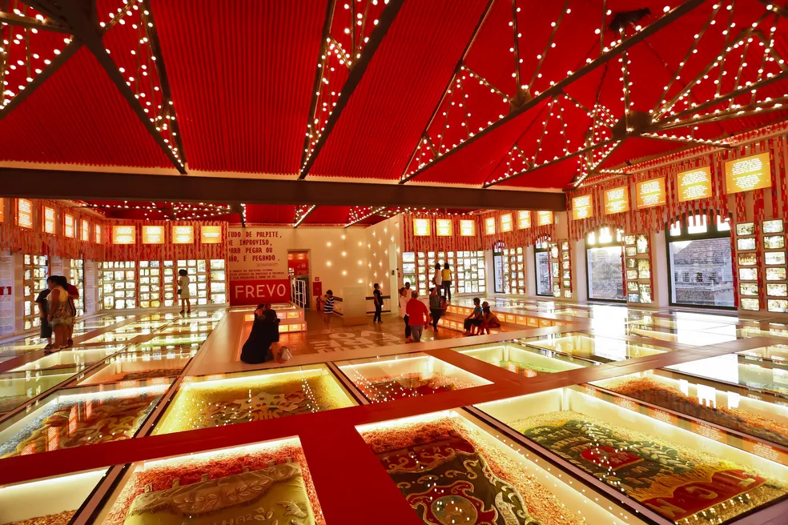

Praça do Marco Zero
A Praça do Marco Zero é um dos principais pontos de encontro e lazer do Recife Antigo. Com uma vista deslumbrante para o Rio Capibaribe, é cercada por bares, restaurantes e diversos eventos culturais ao longo do ano.

Paço do Frevo
O Paço do Frevo é um centro cultural dedicado ao Frevo, uma manifestação cultural típica de Pernambuco. Localizado no coração do Recife Antigo, oferece exposições, aulas, apresentações e muito mais sobre essa rica expressão artística.
